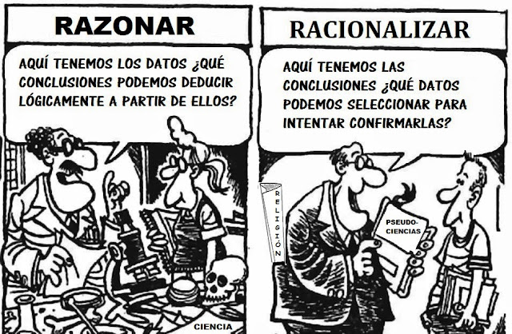

No es lo mismo razonar (formar nuestras creencias de acuerdo a lo que dicen exclusivamente la lógica y los hechos) que
racionalizar (seleccionar de forma sesgada aquellos argumentos y datos que supuestamente avalan nuestros prejuicios e ideas previas).
Mucha gente cree estar haciendo lo primero, cuando en realidad hace lo segundo.
Racionalizar no es razonar sino que es un pseudo-razonar. Es decir, parece que estamos razonando pero no lo hacemos.
Porque
razonar significa sacar sólo aquellas conclusiones derivadas necesariamente de la lógica y los hechos empíricos comprobados.
En cambio, racionalizar significa escoger sólo aquellos hechos y argumentos en función de que confirmen o se adecuen a nuestras ideas previas, al mismo tiempo que ignoramos deliberadamente aquellos que las refuten.